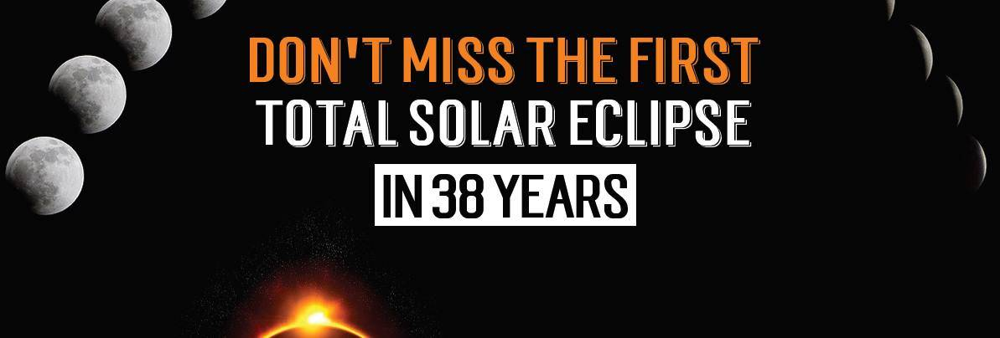

How to Safely View the Great American Eclipse of 2017
On August 21st, for the first time since 1979, a solar eclipse will be visible across North America. What's even more historic is that it will also be the first time an eclipse will be visible across the continent, from coast to coast, since 1918. If you want to bear witness to this historic event, it is important to do so safely which means being knowledgeable about the event and prepared to protect your eyes from potential serious damage and vision loss.


First of all, here are the facts about the upcoming eclipse. A total solar eclipse is when the moon completely blocks the face of the sun (called the photosphere) leaving only the sun's outer ring, called the corona, in view. This event happens briefly, and will only be visible for certain parts of the United States for up to two minutes and forty seconds during the upcoming celestial event. All of North America, including mainland US and Canada, however, will be able to view a partial eclipse for the duration of about two to three hours. You can search online to see which part of the eclipse will be visible from your location and what time you will be able to see it.
With 500 million people in the viewing range of the eclipse, thousands are excitedly preparing for what could be for many a once-in-a-lifetime experience, however, it's crucial to make sure that this is done safely to protect your eyes and vision from serious damage that can occur from viewing an eclipse without proper eye protection.
Looking at a Solar Eclipse
Viewing a solar eclipse without proper eye protection is extremely dangerous and can cause permanent vision loss. Looking directly at the sun can cause a condition called Solar Retinopathy or retinal burns which can cause damage to and destroy cells in the retina, which communicates visual cues with the brain. It can also burn the macula which is responsible for central vision. While we usually have a hard time looking directly at the sun which helps to protect us from this condition, during an eclipse because the sun is partially covered by the moon, looking directly at the sun becomes less difficult. Nevertheless, the exposure to the damaging rays of the sun is just as strong and therefore the risk just as great.
It's important to note that solar burns to the retina do not cause symptoms during that time that you are looking at the eclipse. There is no pain or discomfort. However, the longer you look at it, the deeper the hole that burns through the retina and you would not notice the vision loss until hours later. There is no treatment for solar retinopathy. Many will notice recovery in vision, but depending on the severity of damage there may be only partial recovery which may take up to 6 months after viewing the eclipse.
Eclipse Glasses: Solar Eclipse Eye Protection
Do not view the eclipse without proper eye protection. Protecting your eyes during an eclipse with specially designed eyewear or solar viewers is a must. The American Optometric Association and NASA have released the following statement regarding eye protection: “There is only one safe way to look directly at the sun, whether during an eclipse or not: through special-purpose solar filters. These solar filters are used in “eclipse glasses” or in hand-held solar viewers. They must meet a very specific worldwide standard known as ISO 12312-2.”
It’s important to note that regular sunglasses are not sufficient in protecting your eyes. Here are some additional safety tips issued by NASA for viewing the eclipse:
- Stand still and cover the eyes with eclipse glasses or solar viewer before looking up at the bright sun. After glancing at the sun, turn away and remove the filter—do not remove it while looking at the sun.
- Do not look at the un-eclipsed or partially eclipsed sun through an unfiltered camera, telescope, binoculars or other optical device. Similarly, do not look at the sun through a camera, a telescope, binoculars, or any other optical device while using your eclipse glasses or hand-held solar viewer—the concentrated solar rays will damage the filter and enter your eye(s), causing serious injury.
- If you are within the path of totality, remove your solar filter only when the moon completely covers the sun's bright face and it gets quite dark.
If you plan to view the eclipse, make sure that you plan ahead and obtain eclipse glasses or solar viewers for every person that plans to enjoy the experience. Keep this once in a lifetime experience a safe and enjoyable one.
To obtain eclipse glasses, contact your local optometrist, or visit the American Optometry Association website for more information.
Ready to see clearly?
Book a comprehensive eye exam with Carey Brooks, OD in Frisco, TX.